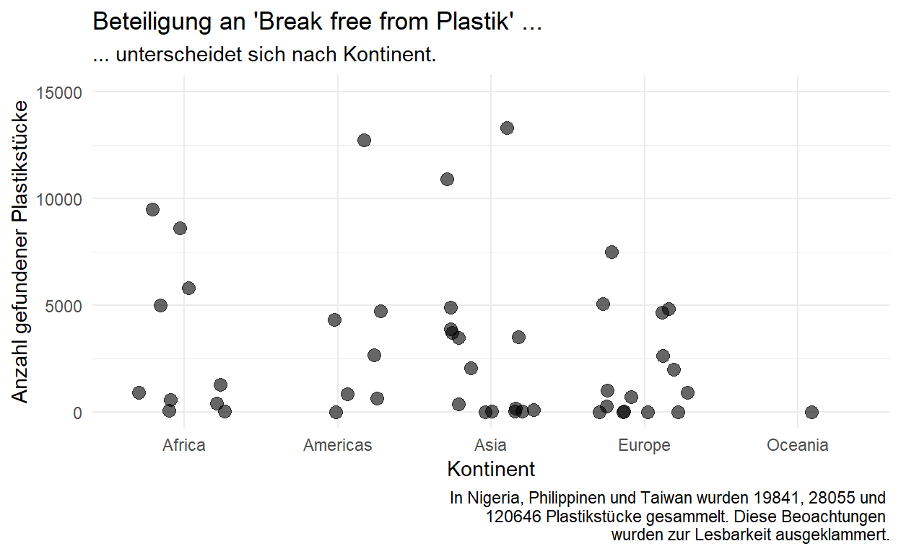
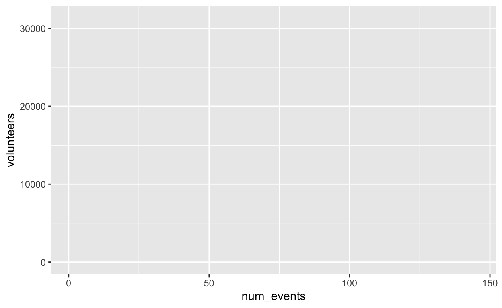
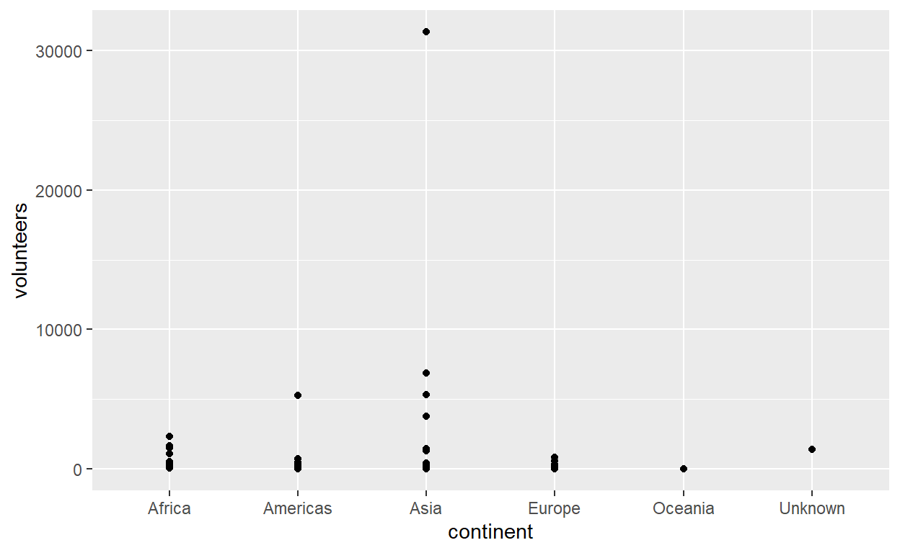
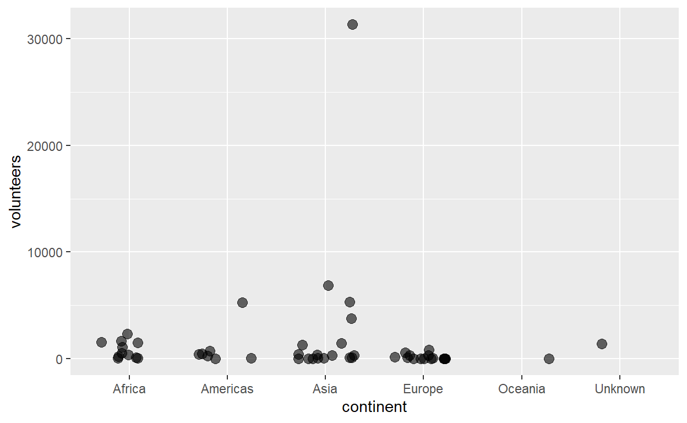
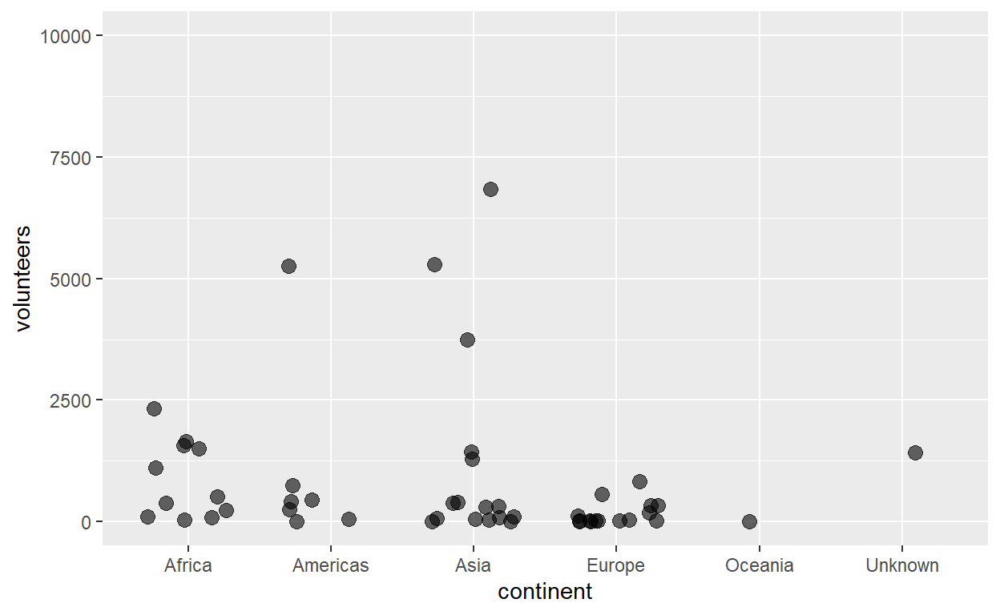
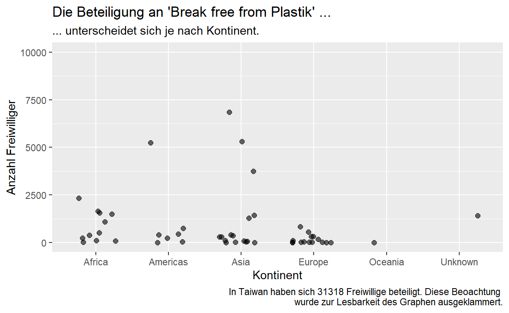
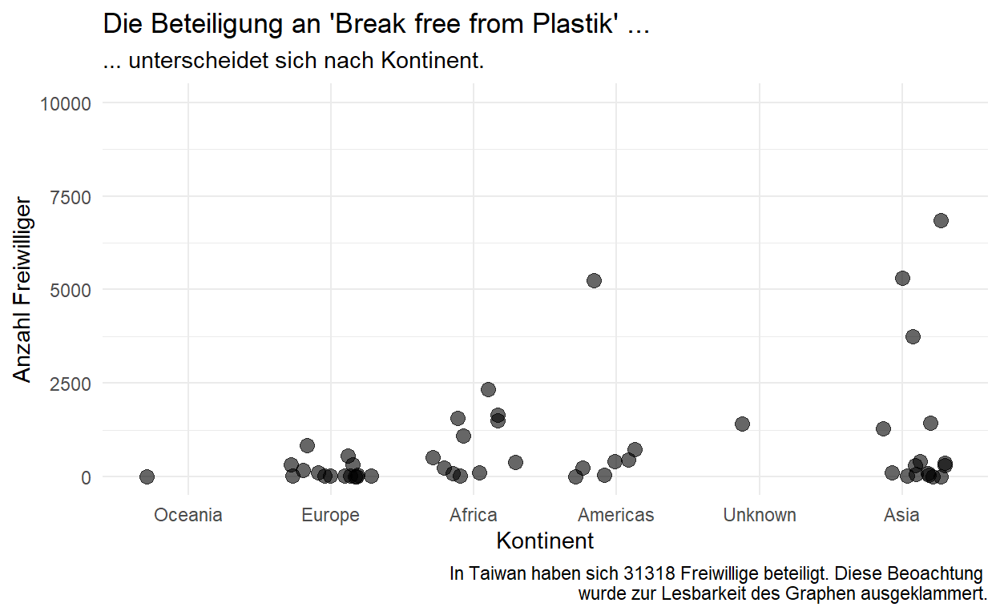
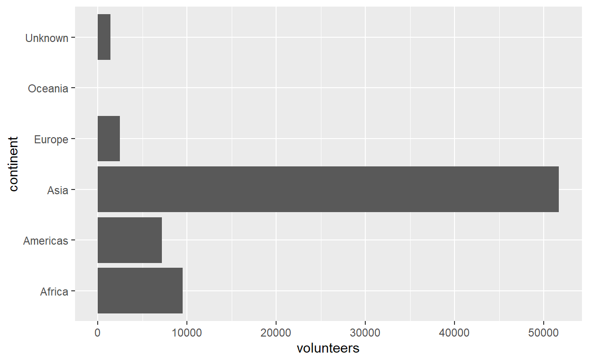
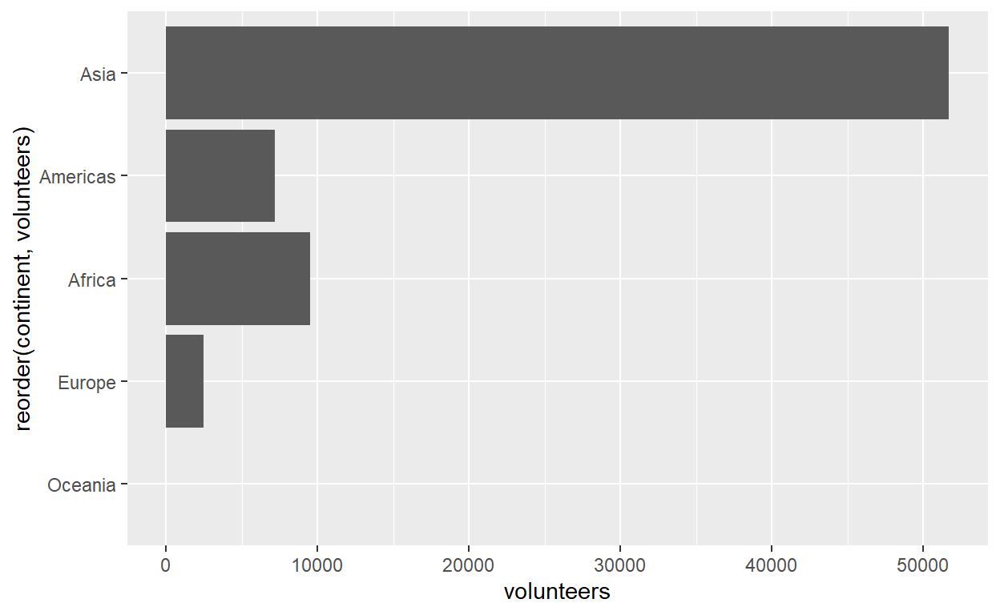

R Lernen - Der Datenkurs von und für die Zivilgesellschaft
Willkommen
Hallo und herzlich willkommen bei “R Lernen - der Datenkurs von und für die Zivilgesellschaft”! Hier findet Ihr alle Informationen zum Kurs, Lernziele und Methodik.
Ersetzt in diesem Codeeditior den Teil mit “Hier dein Name!” mit Eurem Namen. Klickt nun auf “Code ausführen”.
paste("Schön, dass Du da bist,","Hier dein Name!")Als kleine Vorschau auf das, was wir auf der Lernplattform für Euch vorbereitet haben, könnt Ihr Euch gerne unser Promovideo ansehen:
Was Euch diese Woche erwartet
Diese Woche dreht sich alles rund ums Kennenlernen und Aufwärmen. Unten findet Ihr alle wichtigen Informationen zum Kurs nochmal in Schriftform - inklusiver aller wichtigen Links zu Slack und der Live-Session am Freitag auf Zoom. Lest Euch die Informationen gut durch. Falls es dazu Fragen gibt, können wir diese am Freitag, den 1.10.21 um 12 Uhr, nach einer kleinen Vorstellungsrunde klären. Dazu arbeiten wir gemeinsam auf Mural. Wie jede Woche wird im Anschluss an unseren Live-Termin das nächste Kapitel freigeschaltet.
Für diesen Kurs werden wir zudem Lernduos bilden. Falls Ihr Präferenzen habt, mit wem Ihr in eine Gruppe kommen möchtet, dann teilt diese Nina (nina.h@correlaid.org) bitte rechtzeitig mit.
Ihr habt außerdem die Möglichkeit von dem Angebot unserer Partner zu profitieren: Dataquest unterstützt uns mit kostenlosen Lizenzen für ihre Data Science Online Kurse. Für drei Monate könnt Ihr dort zusätzlich zu unserem Angebot Kurse in englischer Sprache belegen. Kontaktiert nach Eurer Registrierung bei DataQuest einfach Nina (nina.h@correlaid.org). Aber Augen auf: Programmierkurse für Datenwissenschaftler:innen sind dort meist etwas schwieriger - lasst Euch davon nicht beirren. Unser Kurs ist auf Anfänger:innen gedacht.
Eckdaten
- 1.10.21 - 17.12.21, Aufwand: 2-4h/Woche
- Blended-Learning mit Lernplattform
- Jeden Freitag live von 12 - 13 Uhr (Klick hier!)
- Mit und von Datenprofis
Wochenplan
Woche 1 (Livetermin 1.10.21): Kick-Off!
Wir stellen uns, Ihr Euch und wir die Kursmodalitäten vor.
Woche 2 (Livetermin 08.10.21): Daten- und Leuchtturmprojekte der Zivilgesellschaft
Wir präsentieren Anwendungsbeispiele von Datenprojekten aus unserem Arbeitsalltag und der Zivilgesellschaft, um einen Ausblick auf Mögliches zu geben. Ihr entwickelt erste Ideen für Euer eigenes Projekt.
Woche 3 (Livetermin 15.10.21): Grundlagen der Datenstrategie
Wir sprechen über Grundsätze der Datenstrategie und was es zu beachten gilt. Ihr entwickelt einen Plan für Euren eigenen Data Use Case (zu dt. Datenanwendungsfall).
Woche 4 (Livetermin 22.10.21): Datenschutz & -Ethik für Anfänger:innen
Wir führen Euch pragmatisch und lebensnah durch den DSGVO-Dschungel, sprechen über Tools und Datenethik. Ihr prüft Euer Projekt auf geltende Regelungen und hinterlegt in einem Datenverarbeitungsverzeichnis die personenbezogenen Daten an, die Ihr in Eurem Projekt nutzen wollt.
Woche 5 (Livetermin 29.10.21): Einführung in RStudio
Wir zeigen Euch, was in RStudio passiert, wo Ihr die erste Zeile Code schreiben dürft und was für spannende Funktionalitäten es in der Applikation so alles gibt. Ihr öffnet RStudio das erste Mal, probiert Euch aus und - bei Fragen rund um das Set-up - helfen wir Euch.
Woche 6 (Livetermin 05.11.21): Erste Analysen in R
Wir starten praktisch, visualisieren Daten, berechnen statistische Kennwerte und zeigen Teststatistik in lebensnah. Ihr macht erste Codingexperimente (aufregend, oder?).
Woche 7 (Livetermin 12.11.21): Datenimport
Wir zeigen Euch, auf wieviele Arten Ihr Daten in RStudio laden könnt - manuell, aber vorallem auch live - und zeigen, wie wir mit APIs arbeiten. Ihr ladet Eure Daten.
Woche 8 (Livetermin 19.11.21): Datenbereinigung
Was tun, wenn die Daten noch gar nicht nutzbar sind? Wir stellen Euch das tidyverse der Datenbereinigung in R vor. Und Ihr? Ihr macht Eure Daten fit für die Auswertung!
Woche 9 und 10 (Livetermine 26.11. und 03.12.21): Reportautomatisierung
In der vorletzten Phase des Datenkurses lernt Ihr, wie Ihr mit RMarkdown automatische Reports erstellen könnt, die Ihr als PDF- oder HTML-Dokument teilen könnt. Ihr sucht Euch die passenden Funktionen aus “Erste Analysen in R” heraus und erstellt damit einen ersten Report.
Woche 11 und 12 (Livetermine 10. und 17.12.21): Interaktive Visualisierung
In der letzten Phase des Datenkurses lernt Ihr, wie Ihr Eure Ergebnisse in einer interaktiven Visualisierung teilen könnt. Wir programmieren mit Euch im Kurs eine erste Shiny-App, erklären, wie so eine Applikation funktioniert und wie Ihr sie hosten könnt. Ihr übertragt das Gelernte auf Eure eigenen Daten.
Lernziele
- Ihr entwickelt ein Grundverständnis für Datennutzung (inkl. Grundkonzepte der Mathematik und Statistik für Non-Techs)
- Ihr erlernt einfache Codesegmente in R selbst zu formulieren und zu adaptieren
- Ihr erhaltet eine Einführung in rechtliche Rahmenbedingungen (Fokus: DSGVO) und ethische Bedenken
- Ihr gewinnt einen Überblick über gängige DSGVO-konforme Tools zur Datenverarbeitung
- Ihr versteht organisatorische Voraussetzungen und die Notwendigkeit der strategischen Konzeptionierung von IT-Neuerungen
Methodik
- Jeden Freitag (im Anschluss an unsere Live-Session) veröffentlichen wir neue Materialien auf unserer Online-Lernplattform
- Dort findet Ihr dann ein Video, die wichtigsten Kernaussagen des Wochenthemas, Übungsmaterialien und (freiwillige) Lernzielkontrollen
- Die Materialien könnt Ihr bearbeiten, wenn Ihr dafür Zeit und einen freien Kopf habt
- In der Live-Session jeden Freitag von 12-13 Uhr besprechen Datenprofis mit Euch die Lösung der Übung und Lernzielkontrolle, die im Anschluss online gestellt wird
- Zusätzlich könnt Ihr 1:1 Sprechstunden mit den Datenprofis buchen, um parallel an Eurem eigenen Projekt zu arbeiten (entweder direkt in der Sprechstunde oder per Mail an Nina)
Kontakt
Die Programmleiterin Nina Hauser erreicht Ihr unter nina.h@correlaid.org.
Zusätzlich habt Ihr die Möglichkeit Euch untereinander in einem Slack-Channel auszutauschen: Tretet dem Channel einfach hier bei. Der Link ist nur zwei Wochen gültig.
Alle weiteren Angebot von CorrelAid e.V. erhaltet Ihr jeden Monat in unserem Newsletter für NPOs.
Und eine kleine Bitte haben wir noch:
Da für uns im Rahmen dieses Kurses allerhand Kosten entstehen und wir bisher leider keine Anschlussfinanzierung gefunden haben, würden wir uns freuen, wenn Ihr es auch der Generation nach Euch ermöglicht an diesem Kurs teilzunehmen. Wie das geht? Unter betterplace könnt Ihr für das Projekt “R Lernen - Der Datenkurs für die Zivilgesellschaft” spenden und den Link gerne auch in Eurem Netzwerk teilen. Pro Teilnehmer:in entstehen uns über die drei Monate etwa 300€ Kosten für Tutor:innen, Hosting und Verwaltung, die auch nach der Erstellung der Online-Materialien bestehen bleiben. Überzeugt? Zur Spendenseite: Klick hier!
Datenprojekte aus der Zivilgesellschaft
Datenstrategie
Datenschutz und Datenethik
Einführung in RStudio
Erste Datenanalysen in R
Erste Datenanalysen in R
dies sage ich im Video
Was machen wir in dieser Einheit? Noch mehr Lust bekommen auf Arbeit mit Daten. Daher starten wir direkt mit einem Anwendungsbeispiel. Hier geht es darum große Konzepte kennenzulernen und so Details zu wie das genau alles implementiert wird, die im Kursverlauf kommen, besser einordnen zu können.
gern an einem eigenen datensatz nachmachen
Agenda der Einheit 0. Einlesen und Prep 1. Mittels Visualisierung die Daten erschließen 2. Kompakte statistische Kennzahlen erstellen 3. Inferenz: Teststatistik erstellen und interpretieren
Datensatz von TidyTuesday vorstellen
https://de.wikipedia.org/wiki/Recycling-Code
https://github.com/rfordatascience/tidytuesday/tree/master/data/2021/2021-01-26
Vorbereitung
## spec_tbl_df [13,380 x 14] (S3: spec_tbl_df/tbl_df/tbl/data.frame)
## $ country : chr [1:13380] "Argentina" "Argentina" "Argentina" "Argentina" ...
## $ year : num [1:13380] 2019 2019 2019 2019 2019 ...
## $ parent_company: chr [1:13380] "Grand Total" "Unbranded" "The Coca-Cola Company" "Secco" ...
## $ empty : num [1:13380] 0 0 0 0 0 0 0 0 0 0 ...
## $ hdpe : num [1:13380] 215 155 0 0 0 0 0 0 0 0 ...
## $ ldpe : num [1:13380] 55 50 0 0 0 0 0 0 0 0 ...
## $ o : num [1:13380] 607 532 0 0 0 0 0 0 0 0 ...
## $ pet : num [1:13380] 1376 848 222 39 38 ...
## $ pp : num [1:13380] 281 122 35 4 0 7 6 0 1 4 ...
## $ ps : num [1:13380] 116 114 0 0 0 0 0 0 0 0 ...
## $ pvc : num [1:13380] 18 17 0 0 0 0 0 0 0 0 ...
## $ grand_total : num [1:13380] 2668 1838 257 43 38 ...
## $ num_events : num [1:13380] 4 4 4 4 4 4 4 4 4 4 ...
## $ volunteers : num [1:13380] 243 243 243 243 243 243 243 243 243 243 ...
## - attr(*, "spec")=
## .. cols(
## .. country = col_character(),
## .. year = col_double(),
## .. parent_company = col_character(),
## .. empty = col_double(),
## .. hdpe = col_double(),
## .. ldpe = col_double(),
## .. o = col_double(),
## .. pet = col_double(),
## .. pp = col_double(),
## .. ps = col_double(),
## .. pvc = col_double(),
## .. grand_total = col_double(),
## .. num_events = col_double(),
## .. volunteers = col_double()
## .. )Schau Dir an, wie die ersten Zeilen des audit_plastic Datensatz gefüllt sind.
head(audit_plastic)Welche Werte nehmen die Variablen “pvc” und “empty” an? Letzeres sind Plastikteile, die gefunden aber nicht klassifiziert wurden. Prüfe dies mit dem folgenden Code Snippet.
audit_plastic %>%
tabyl(empty)audit_plastic<- audit_plastic %>%
select(-empty)audit_plastic<- audit_plastic %>%
select(-empty)Alle ‘NA’ Ausprägungen, wandeln wir in 0 um. Das ist kein allgemeingültig richtiger Umgang mit fehlenden Werten, aber für audit_plastic ergibt das Sinn.
audit_plastic<- audit_plastic %>%
mutate(
across(everything(), ~replace_na(.x, 0))
)1 Visuelle Exploration
dies sage ich im Video
Kernaussagen
Wichtig erst visualisieren, dann zusammenfassende Statistik.
Ein Q&A mit den Daten machen - mit dem Wissen der Aktion, welche Fragen würdet ihr den Daten stellen wollen?
ggplot2ist ein Paket für gute Graphen in R.Es folgt der “Grammar of graphics”.
Die Syntax entsteht Schicht-für-Schicht. Einzelne Bestandteile werden mit einem ‘+’ hinzugefügt.
Die wichtigsten Schichten (Bestandteile) eines ggplots sind:
data- Der Datensatz.aes()- Die ästhetischen Attribute wie die x- oder y-Achse.geom_*()- Die geometrische Form, mit welcher die Werte dargestellt werden,
Meine Ideen:
Community Perspektive
- Wie viele Teilnehmer? Insgesamt und nach Ländern? - Wie viele Events?
Activism/ Audit Perspektive - Wievele Firmen? Insgesamt und nach Ländern? - Wieviel Plastik vo welcher Sorte?
- layered grammar
- r4ds inspirierte Vorstellung von ggplot2
https://github.com/allisonhorst/stats-illustrations/
Cedrics Blog verlinken

Im Video visualisieren wir die Plastikmengen. Hier widmen wir uns der Community-Perspektive: wo haben sich wie viele Freiwillige an Breaking Free From Plastic beteiligt?
Wir beginnen mit dem Grundgerüst einer ggplot Graphik: dem Erstellen eines ggplot-Objekt und der Definition von ästhetischen Attributen. Das sind zum Beipiel die Variablen bzw. Spalten, die auf der x-und y-Achse dargestellt werden sollen. Was produziert dieser Code Snippet? Was passiert, wenn ihr die Variablen vertauscht?

Nun fügen wir ein geom_point hinzu.
 Mit position = position_jitter(width=0.3) schaffen wir es, dass die Punkte sich nicht alle überlagern. Mit alpha = 0.6 werden die Punkte etwas transparent, mit size=3 etwas größer und so auch einzeln besser sichtbar
 Findet heraus, welches Land hinter dieser extreme Beobachtung steckt
community %>%
filter(volunteers>20000)Welche Möglichkeiten seht ihr, mit dieser Beobachtung umzugehen?

Anmerkungen sind ganz wesentliche Bestandteile von Graphen. Neben Titel, Achsenbeschriftung wäre hier auch ein Hinweis auf den Ursprung der Daten sowie das eine Beobachtung rausgenommen wurde sinnvoll. Dies lässt sich alles über labs() in die Graphik einfügen.

Den letzten Schliff können wir dem Layout geben, in dem wir den Stil über theme_() ändern. Zum Beispiel in them_minimal(). Zu dem können wir die Kontinente nach Teilnehmerzahl sortieren

Jetzt kennen wir die Grundfunktionen von ggplot. Es ist ein sehr mächtiges Tool mit vielen Stellschrauben. Probiert gern noch mehr aus. ZUm Beispiel gibt es ganz viele geom_ Optionen. Für die Analyse der Frage: wo haben sich wie viele Freiwillige an Breaking Free From Plastic beteiligt? Könnten wir auch ein Balkendiagramm nutzen. geom_bar(stat="identity") summiert direkt die Freiwilligenanzahl je Kontinent.

Hier könnte es sinnvoll sein, die Beobachtungen Kontinent “unkonwn” auszuklammern und nach der Gesamtzahl der Freiwilligen zu sortieren.

Auch hier ist es wichtig, die Graphik gut zu beschriften.

Exploration mit statistischen Kennzahlen
Leitfragen
- Wie viel Plastik wurde durchschnittlich gefunden?
- Wie viel Plastik wurde durchschnittlich je Kontinent gefunden?
- Wie hoch sind die relativen Antile der Plastiktypen, die gefunden wurden?
dplyr::group_by + summarize - a powerful combo
Kurzstatistiken lassen sich ausgeben mit summary()
## country year hdpe ldpe
## Length:52 Min. :2019 Min. : 2.0 Min. : 2.00
## Class :character 1st Qu.:2019 1st Qu.: 20.0 1st Qu.: 18.25
## Mode :character Median :2019 Median : 53.0 Median : 152.00
## Mean :2019 Mean : 372.8 Mean : 1979.45
## 3rd Qu.:2019 3rd Qu.: 217.0 3rd Qu.: 2275.25
## Max. :2019 Max. :3728.0 Max. :11700.00
## NA's :27 NA's :32
## o pet pp ps
## Min. : 1 Min. : 1.0 Min. : 4.0 Min. : 3.0
## 1st Qu.: 286 1st Qu.: 25.5 1st Qu.: 99.0 1st Qu.: 10.0
## Median : 975 Median : 172.0 Median : 282.5 Median : 67.0
## Mean : 6643 Mean : 2202.2 Mean : 749.5 Mean : 294.5
## 3rd Qu.: 3739 3rd Qu.: 2395.0 3rd Qu.: 845.0 3rd Qu.: 214.2
## Max. :120646 Max. :36226.0 Max. :5420.0 Max. :2101.0
## NA's :13 NA's :8 NA's :28 NA's :32
## pvc grand_total continent countrycode
## Min. : 1.00 Min. : 1.00 Length:52 Length:52
## 1st Qu.: 6.00 1st Qu.: 76.25 Class :character Class :character
## Median : 18.00 Median : 1627.00 Mode :character Mode :character
## Mean : 36.69 Mean : 8254.44
## 3rd Qu.: 43.00 3rd Qu.: 4907.00
## Max. :188.00 Max. :120646.00
## NA's :39Ein sehr nützliche Kombination ist: group_by() und summarize(). Damit können wir Daten gruppieren und Kennzahlen wie den Mittelwert und die Standardabweichung der gefundenen Plastikstücke ausrechnen lassen.
Weitere interessante Kennzahlen sind: der Median und die Länderanzahl.
## `summarise()` has grouped output by 'continent'. You can override using the `.groups` argument.
## `summarise()` has grouped output by 'continent'. You can override using the `.groups` argument.## `summarise()` has grouped output by 'continent'. You can override using the `.groups` argument.Teststatistik
Sage ich im Video
Spirit: Evaluation
Achtung - hier bewegen wir uns auf theoretisch gesehen auf neuem Territorium: Inferenzstatistik: wir schließen von unserer Stichprobe auf die Grundgesamtheit. Die Programmierung ist simple, damit es auch von der Interpretation her sinnvoll ist, müssen einige Annahmen gelten. Diese leiten wir hier nicht her, verweisen aber auf entweder euer Statistikwissen/ Nachschlagewerk oder: https://www.youtube.com/watch?v=RRIsBFW8ovc (2-sample test) oder https://www.youtube.com/watch?v=MCmZ-HXSZ4A (chi2 Test)
mögliche Fragen:
Community Perspektive
- mehr durchschnittliche Teilnehmer pro Event? (Länder im Vgl)
Audit Perspektive
- Unterscheiden sich die Top3 Anteile der Plastik signifikant voneinander?